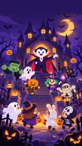

Link copied! Challenge your friends!

TRICK ORDEFEND!
I despise those pesky trick-or-treaters! Minions, keep them away from my castle!
TRICK OR DEFEND!
LOADING THE CASTLE POSTER…
TRICK ORTREATERS!
TAP ANYWHERE TO CONTINUE
